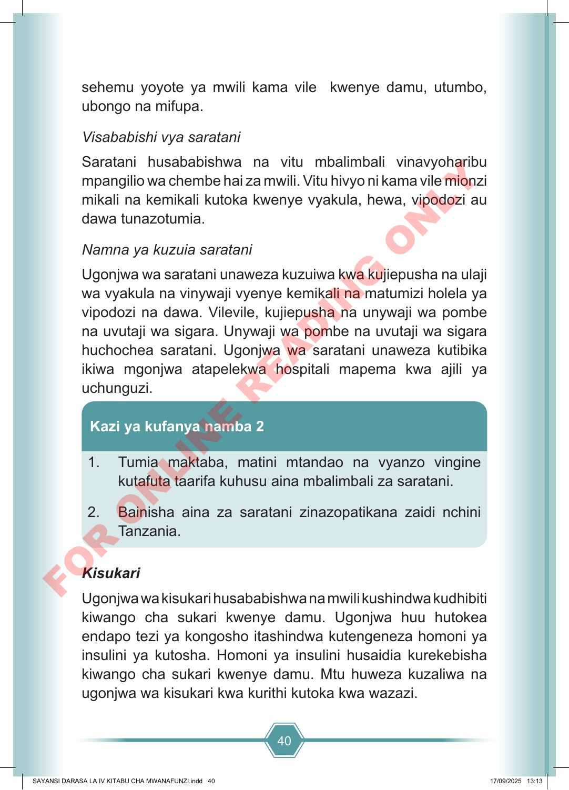

40 sehemu yoyote ya mwili kama vile kwenye damu, utumbo, ubongo na mifupa. Visababishi vya saratani Saratani husababishwa na vitu mbalimbali vinavyoharibu mpangilio wa chembe hai za mwili. Vitu hivyo ni kama vile mionzi mikali na kemikali kutoka kwenye vyakula, hewa, vipodozi au dawa tunazotumia. Namna ya kuzuia saratani Ugonjwa wa saratani unaweza kuzuiwa kwa kujiepusha na ulaji wa vyakula na vinywaji vyenye kemikali na matumizi holela ya vipodozi na dawa. Vilevile, kujiepusha na unywaji wa pombe na uvutaji wa sigara. Unywaji wa pombe na uvutaji wa sigara huchochea saratani. Ugonjwa wa saratani unaweza kutibika ikiwa mgonjwa atapelekwa hospitali mapema kwa ajili ya uchunguzi. 1. Tumia maktaba, matini mtandao na vyanzo vingine kutafuta taarifa kuhusu aina mbalimbali za saratani. 2. Bainisha aina za saratani zinazopatikana zaidi nchini Tanzania. Kazi ya kufanya namba 2 Kisukari Ugonjwa wa kisukari husababishwa na mwili kushindwa kudhibiti kiwango cha sukari kwenye damu. Ugonjwa huu hutokea endapo tezi ya kongosho itashindwa kutengeneza homoni ya insulini ya kutosha. Homoni ya insulini husaidia kurekebisha kiwango cha sukari kwenye damu. Mtu huweza kuzaliwa na ugonjwa wa kisukari kwa kurithi kutoka kwa wazazi. SAYANSI DARASA LA IV KITABU CHA MWANAFUNZI.indd 40 SAYANSI DARASA LA IV KITABU CHA MWANAFUNZI.indd 40 17/09/2025 13:13 17/09/2025 13:13 F O R O N L I N E R E A D I N G O N L Y